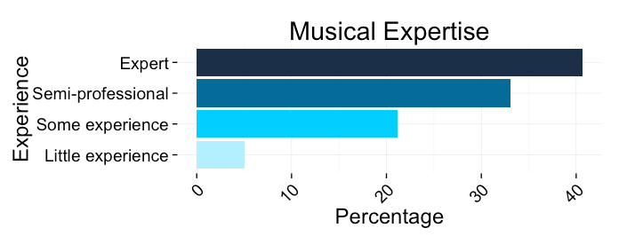
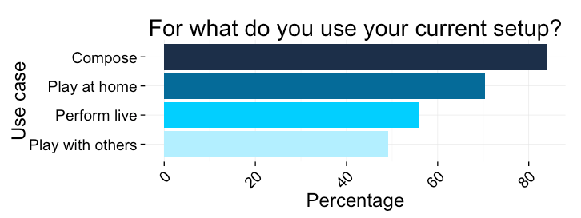
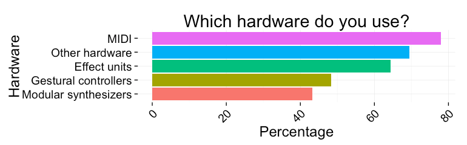
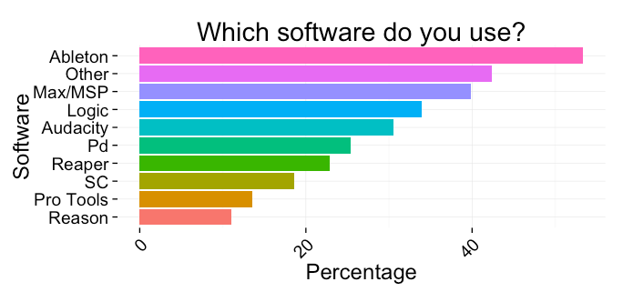

Reimagining (Accessible) Digital Musical Instruments: A Survey on Electronic Music-Making Tools
Abstract
This paper discusses findings from a survey on interfaces for making electronic music. We invited electronic music makers of varying experience to reflect on their practice and setup and to imagine and describe their ideal interface for music-making. We also asked them to reflect on the state of gestural controllers, machine learning, and artificial intelligence in their practice. We had 118 people respond to the survey, with 40.68% professional musicians, and 10.17% identifying as living with a disability or access requirement. Results highlight limitations of music-making setups as perceived by electronic music makers, reflections on how imagined novel interfaces could address such limitations, and positive attitudes towards ML and AI in general.
Author Keywords
ADMI, DMI, Accessibility
CCS Concepts
•Applied computing → Sound and music computing;
Introduction
The authors of this paper, like many in the NIME community, share a passion for practice-based research and participatory design methods in the creation of new digital musical instruments. In a year of travel restrictions and life-saving physical distancing measures, the pandemic has halted our creation of live real-time interactive performances and installations, and our ability to connect with participants at music therapy sessions and aged-care facilities. Putting our practice aside and the minimal pivots we made towards some online creative output, this paper presents an attempt to reach out to the community of electronic music-makers through an online survey conducted while much of our creative practice and research in hands-on participatory workshops was on pause.
For us, this was an opportunity to ask electronic music-makers of varying experience about their practice and setup, and invite them to imagine and describe their ideal interface, if such a thing could exist. Of particular interest was to take our findings from all the musicians surveyed into the field of Accessible Digital Musical Instruments (ADMIs). Musicians with disability are particularly under-represented in the global music community [1]. In Australia, for example, 4.5 million people (18% of the population) identify as living with a disability [2], while only 1078 (7%) of the 15,400 practicing musicians live with disability [3]. Furthermore, musicians with disability have been disproportionately affected by COVID-19 [1].
In previous work, we argue that the design of ‘conventional’ Digital Musical Instruments (DMIs) for professional use should inform the design of ADMIs [4], and that artificial intelligence (AI), machine learning (ML) and gestural technology are under-utilised in the field [5]. This paper argues that designing for people with disability makes for more inclusive musical instruments which can inform the design of all instruments, and our intent is to use the findings from this survey to inform the design of future (A)DMIs. The purpose of this paper is to give voice to people with disability in the NIME community, hence we have chosen to present much of the findings through quotes made by participants.
Background
Accessible Digital Musical Instruments
The field of ADMIs is growing rapidly. Indeed, the theme at last year’s NIME conference was ‘Accessibility of Musical Expression.’ ADMI researchers are starting to turn to novel technologies, however, gestural ADMIs are still surprisingly rare, as is the use of ML[5]. One of the main barriers voiced by musicians with disability in participating in music-making is graded examinations [1] – competing with musicians without disability in how to correctly play particular pieces of music on traditional instruments - designed by musicians without disability, for musicians without disability. One of the greatest opportunities in the field of ADMIs is that these instruments have no ‘right’ or ‘wrong’ way of being played. ADMIs hence invite curiosity, exploration and a sense of empowerment. In a music-making context, empowerment is about being able to access the experience of music, and regain the rights to hear, play and express music, attaining autonomy and agency through creativity [6]. Within the NIME community, this empowerment must go a step further, inviting and supporting musicians with disability to hack, code and build their own custom instruments - designed by musicians with disability, for musicians with disability.
Motivated to learn more about how electronic musicians engage with their practice, we set out to distribute an online survey targeting musicians with disability, but not excluding any participants from taking part.
Previous Surveys on DMIs
A previous survey focusing on people’s relationship to their musical tools was presented in [7]. The authors used a phenomenological and qualitative approach focusing on the experience of playing, composing for, and designing digital versus acoustic instruments. The survey was primarily aimed at instrumentalists and people making their own instruments or compositions using audio programming tools. Similar to the work presented in our paper, the authors asked a question about people’s ‘dream software’ (what kind of interfaces people would like to use and if people found that the limitations of instruments are a source of frustration or inspiration). Findings suggested that an important difference between digital versus acoustic instruments is that digital instruments can be created for specific needs, whereas acoustic instruments require the player to mould oneself to the instrument. However, accessibility was not a theme in this study.
A survey aiming to look beyond distinct communities in order to identify trends in DMI use across a wide variety of genres and practices was presented in [8]. Findings suggested that durability, portability, and ease of use were of the greatest importance for electronic musicians.
A survey on the uptake of music AI software was recently published in [9]. Results indicated that participants generally showed optimism towards the future potential of AI tools, rather than present utility, with those with more programming experience showing higher skepticism towards the current state and future potential of AI.
Other than surveys of music technology use in the field of music therapy [10] [11], little work has been done in investigating the use of DMIs by people with disability. In previous surveys on DMIs and music AI software, there is also no mention of whether any of the participants identified as living with a disability. This, despite the fact that results from [1] showed that 20% of the instruments used by music-makers with disabilities were DMIs.
Methodology
We sent the call out for the survey in January through various avenues1 targeting people with disability. Unfortunately, we only managed to collect 12 answers from persons with disability, despite these attempts.
The questionnaire was divided into four sections:
1) Personal details: a set of demographic questions on age, gender identity, nationality, country of residence, and whether the person identified as living with a disability or had any access requirements. For those who identified as living with a disability, there was also a question about the use of assistive technologies.
2) Electronic music experience: questions about the musical expertise and context of use of electronic musical instruments. Participants were asked how long they had been creating electronic music, if they had any formal electronic music training, and if they usually play or perform electronic music with others.
3) Current practice and setup: questions focused on hardware and software used in participant’s electronic music-making setup and if any custom-built or hacked technologies or tools were used, i.e. if participants built their own interfaces for musical expression. We also asked what the setup was used for (to perform live, to compose, to play with others and/or to play at home) and if there were any limitations or frustrations of this setup. Finally, we included a question about if/how participants’ practice had been affected by the COVID-19 pandemic (and if so, how), since this might affect other survey responses.
4) Imaging DMIs: three questions in free-text form, focusing on 1) the idea of an ideal interface that would allow you to create exactly the music that you would want to make, what that interface would look like and how it would work, 2) a question about the use of gestural in-air controllers and if and how that could be used in current practice, and 3) a question about if and how ML and AI could be used in the participants’ practice.
The questionnaire and data are available as supplementary material2.
Analysis
Multiple-choice questions were analysed using frequency metrics. Open-ended questions were analysed using thematic content analysis [12] with category counts; free text answers were encoded into different categories based on thematic keywords. Responses related to similar keywords were grouped together, whereafter occurrence for respective keyword category was calculated. The analysis was carried out by both authors, independently, whereafter themes were discussed and merged into a joint categorisation. Themes had to include at least 3 quotes from 3 participants to be included.
Participants
Demographics
118 persons participated in the study. Average age was 38.2 years (median 36 years, min 20 years, max 78 years). 73.73% identified as male, 20.34% as female, and 5.93% identified using other terms (2 no gender, 2 demimale/maleish, 1 non-binary). In total, 12 participants reported living with a disability or access requirements. The most frequent nationalities were Swedish (21.19%), American (16.10%), Australian (12.71%), French (10.17%), Turkish (6.78%), Italian (5.93%), British (5.08%), Canadian (4.24%) and Spanish (2.54%).
Disability
Participants reported living with the following disabilities and/or access requirements: ADHD (2), visually impaired (1), partially sighted (1), partially deaf (1), dyslexia (2), Downs Syndrome (1), Dyspraxia3 (1), autism (1), in a wheelchair (1), bowlegged (1), missing left forearm and hand as well as mobility-related difficulties relating to bi-lateral fibula hemimelia4 and arthritis5 in foot/ankle (1), broken hand (1), and manic depression (1).
Electronic Music Experience


Participants’ musical experience.
In total, 40.68% identified as having "Expert or full-professional activity", 33.05% as "Semi-professional activity (several years of practice, skills confirmed)", 21.19% as "Some experience (advanced amateur, some years of practice)", and 5.08% as "Little experience (occasional amateur)," see Fig. 1. On average, participants had created electronic music for 14.2 years (median 10, min 0, max 54 years). A total of 57.63% had received formal training in electronic music and 42.37% were self-taught. The ratio of participants that played/performed electronic music with others was 63.56%. Participants with disability had created electronic music for an average of 9.92 years (median 10.5, min 1, max 21 years). Among these participants, 58.33% had received formal training in electronic music, and 41.67% were self-taught. The ratio of these participants that played/performed electronic music with others was 83.33%.
Results
Current Setup
The purpose(s) of use for the current setup is summarised in Fig. 2. The most common use case was composing (83.90%). This was followed by playing music at home (70.34%), performing live (55.93%) and playing with others (49.15%). For participants with disability, 91.67% used their setup to compose, 66.67% to perform live, 58.33% to play with others, and 58.33% to play at home.


Use cases.
The most commonly used hardware and software types are displayed in Fig. 3-4, respectively. Interestingly, 69.49% stated that they used other hardware than the ones suggested in the survey form, 39.83% reported using their own custom-built or hacked interfaces, and 5.08% reported collaborating with someone who builds tools for them. For participants with disability, 66.67% used other hardware than the ones suggested in the survey form, 41.67% reported building customised interfaces, and 8.33% reported collaborating with someone who builds tools for them.
Custom hardware mentioned by participants with disability were: an augmented trombone controller, the T-stick, custom hardware built by sensors and Arduino or Bela, hacked or circuit-bent toys, consoles, or electronic interfaces. 25% out the participants with disability used assistive technologies (Soundbeam, guided access iPad, switches, prescription glasses, colour-schemes for colour blindness, voice control and text-to-speech applications). A quote from one participant regarding assistive technology was: “I've had my disability since birth and grown up with technology (particularly with computers) and so I have probably adapted to the technology, rather than using assistive technologies.”


Types of hardware used by participants.
Examples of commonly used MIDI controllers were Novation, Korg, and Akai. Examples of common modular synthesisers were Doepfer, Korg, Buchla, Serge, Eurorack, and Nord. Commonly used tools were Arduino, Bela, tablets, Nintendo Wii motes, Leap Motion, Roli, and phones. 9 participants explicitly reported that they build their own custom-built gestural controllers.


Software used by participants.
Limitations and frustrations
Out of all participants, 24.36% explicitly stated that they experienced no limitations and frustrations with their current setup; for participants without disability the figure was 21.29%, and for participants with disability it was 46.15%. Identified themes are presented in Tab. 1. Interestingly, 5 respondents mentioned positive aspects of limitations, describing them as a source of creativity.
Theme | N |
|---|---|
Software/hardware limitations (including obsolescence) | 13 |
Need for more intuitive interfaces | 13 |
Time (to setup, create sounds, update systems, build/maintain sensor) | 11 |
Physical space requirements for gear | 10 |
Portability/size of equipment | 8 |
Limitations in terms of number of ports/inputs (MIDI/USB) | 7 |
Cost/budget | 7 |
Too many cables/adapters | 7 |
Issues related to real-time performance | 6 |
Computing power | 5 |
Limitations as a source of creativity | 5 |
Lack of technological/coding skills | 5 |
Ergonomics | 3 |
For participants with disability, limitations that were mentioned related to malfunctioning hardware, need for software updates, too little time or space, lacking knowledge, difficulties with reading menus, lack of voice control, and the need for more seamless work with hardware.
Effects of COVID-19
In total, 51.69% of the participants stated that their music practice had been affected by COVID-19, 36.44% that they had not been affected, and 11.86% were not sure. Among participants with disability, 50% reported that COVID-19 had affected their music-making practice, 25% that it had not, and 25% were not sure.
Negative effects
The most frequent comment was that it has been impossible to play live and do performances (24 participants). Many participants (20) also mentioned not being able to rehearse for concerts and play or collaborate with others, thereby being forced to make music on your own. 9 participants described that it was harder to make music because of the lifestyle during the pandemic and that this had affected their creative process negatively. Other mentioned effects were reduced access to facilities, e.g. music studios and spatialisation equipment (5), and financial difficulties due to fewer opportunities (4).
Positive effects
Interestingly, some participants mentioned positive effects. 12 participants reported that they had been practicing and producing more or had more time to focus on making music. Several commented that COVID-19 has resulted in changing practices: changing artistic direction, affecting the type of music you make (8); exploring new environments and tools (7), acquiring new skills (4), and shifting focus to online collaborations/performances (4).
Imagining DMIs
The ideal interface
Identified themes are presented in Tab.2. (N=number of participants). Most quotes related to descriptions of ideal interfaces based on providing examples of existing interfaces. Examples of interfaces that already come close to an ideal interface were modular synthesisers, the Roli Seabord and Ableton Push 2. Some participants focused on describing combinations of, or hybrid, interfaces, e.g. “A hybrid between Pure Data and Wekinator.”
Theme | N |
|---|---|
Descriptions based on existing interfaces | 18 |
Simple and user-friendly interfaces supporting learning | 11 |
Descriptions of imagined gestural control | 10 |
Access to a large variety of synthesis tools/effects | 10 |
Questioning the idea of an ideal interface | 10 |
Touch interfaces, tactile/haptic feedback | 10 |
More expressive gesture detection/control | 8 |
Augmented keyboards/claviers | 7 |
Current setup is already good enough | 6 |
Creating music directly from your brain | 6 |
Modular system design | 6 |
Don’t know | 6 |
Assignable knobs/buttons/faders/touch pads | 5 |
2D or 3D representations | 5 |
Responsive interfaces with no latency | 5 |
Multi-parameter control | 5 |
Solving the problem by developing your own interface | 4 |
Make music using voice as input | 3 |
Invisible interface | 3 |
Compositional assistants | 3 |
Another frequent theme was gestural control. For example, one participant described a “seamless wearable interface that could recognise complex multidimensional gestures. For instance intention, direction, rhythm and specific choreographed movements.” One participant referred to the gestural interface seen in the film Minority Report6. Another participant described: “Idealy [sic], it would like be a central dedicated communication card that can establish the link between the computer and any custom made interface. As so, I could use easily several custom gestural controller depending the mood, ideas and projects.” Moreover, one participant stated: “Not that different from what I use now in terms of gestural control and instrument integration, but more polished and accessible to control internal processes (mapping, sound synthesis, etc).”
Many respondents stressed the need for physical interaction and haptic or tactile feedback. For example, one participant wrote: “I'm currently interested in higher-level ‘compositional assistants’, so I would imagine an environment (probably a customized one for each piece and/or performance) where I could use a tactile and responsive interfaces to control many parameters of sound in real-time.” There were also many comments about the need for more simple and user-friendly interfaces that could better support learning: “Simple and easy with different available tutorials. Being self-taught, the worst kind of interface is the one where there are a million buttons everywhere which make comprehension near impossible.” Another common theme was having access to a large variety of synthesis tools and effects: “Infinity and divine inspiration. In smaller scale: an electric junkyard in a concert hall.”
Several participants questioned the idea of an ‘ideal interface’ and commented on the relationship between interfaces and creative compositional processes, emphasising the need for diversity. For example, one respondent wrote: “This is very hard to tell. Considering that my music practice involves an exploration to actually find the music I want to make (that is, I never really know it at the beginning of the creative journey), such an interface couldn't exist in advance, and it could only limit my possibilities. Or, on the contrary, exactly those limitations could become source of inspiration.” Another respondent wrote: “I think that constraints help in composing music, limitation is a kind of starting point in order to compose or explore.” A third participant stated: “It doesn't exist. The way I make music is playing many different instruments and interfaces.”
Some described that ‘no interface’ would actually be the ideal case, or requesting ‘invisible’ interfaces: “Invisible gestural interface with zero latency and infinite sampling rate of infinite points of motion on the body that 'knows' without training what sound you are attempting to embody/create.” Another participant described this as “No special tools, no electronics gadgets weared [sic] by the user, total fredom [sic].” Others suggested creating music “directly from your brain”: “[…] I'd like an interface that can as fast as possible, with as little translation-noise as possible, take the clear ideas in my mind and realise them without having to ‘wait’ to show them to others.” Another alternative input method was through voice/singing: “Something that converts voice to MIDI note data - or amplifies singing signal and layers voice with other textures to strengthen.”
Additional themes included interfaces allowing for more expressive gesture control, augmented claviers, modular system design, assignable buttons/knobs etc., no latency, multi-parameter control, and 2D or 3D representations. For example, one participant mentioned: “I feel like it would be 3D where it dosen't [sic]follow a linear line left to right but you could dive in to the sound and time in a Z axis, if that makes any sense.”
Imaginative uses of gestural technology
Identified themes are presented in Tab.3. The most frequent comment related to skepticism towards in-air controllers in terms of lack of precise control and tactile/haptic feedback, and references to the Theremin as a difficult instrument. One participant commented: “I really like having something physical to hold onto, with passive (or active!) physical feedback, resistance to certain motions, weight, inertia.” Many participants mentioned that they were not sure if in-air interaction would fit their current music-making practice. Others reflected on their own experiences from in-air controllers. There were also some positive comments and reflections of successful use of in participants own practice: e.g. “I mostly use it to control the position of sound objects in immersive audio environments.” Another common theme was related to mapping in-air movements to sonic parameters, with one respondent describing “Timbral shifts/ other effects shifts, tempo shifts for loops, pitch shifting, basically anything a slider or button can do but without having to aim a finger or foot precisely at a tiny object away from your performing space.” Participants also described a range of different use cases, e.g. augmentation of acoustic instruments and dance.
Theme | N |
|---|---|
No interest in in-air controllers | 22 |
Suggested mappings between in-air movements and sonic parameters | 18 |
Experiences of using in-air controllers7 | 17 |
Lack of tactile/haptic feedback | 14 |
Not sure if useful in participant’s current music practice | 11 |
Use case: live performances | 10 |
Theremin | 8 |
Use case: dance | 7 |
Use case: augmentation of acoustic instruments | 7 |
Use case: spatial audio | 4 |
Use case: recording automation of control parameters | 4 |
Use case: VR/AR | 4 |
Use case: conducting | 3 |
ML and AI in imaginative interfaces
Overall, attitudes towards the use of ML methods and AI tools were generally positive: 31.35% participants explicitly answered that they could be useful and 6.78% were already using such tools. However, 15.25% participants said that they did not think these tools could be used, and 11.86% were not sure. Identified themes are presented in Tab. 4. The most common theme related to using ML and AI as tools in the compositional process. For example, one participant mentioned: “Yes I would love to have an AI that could take what I was playing and prompt me with interesting melodies.” Another participant suggested that such systems could be used for “Recognizing the patterns of neural activity on my audial cortex to record the music in my head.” Many other potential use cases were also mentioned, e.g. gesture recognition, sound generation and exploration of sonic spaces, mixing and mastering, as an improvisational partner, automation of time-consuming/boring tasks, habit detection, mapping, as a teaching/practice tool, creation of game- or popular music, and randomisation/pattern generation.
Some were skeptical about the influence of ML and AI on artistic processes. For example, one respondent wrote that it could be used for craftmanship duties, but “[I] don't think it's a good idea to make an ML engine do artistical [sic] decisions.” Another participant stated: “Spontaneously I would maybe not like an ML/AI to learn from me, but rather other people and present me their input.” One participant also wrote: “Primarily, these things are tools moreso than anything else.”
Interestingly, some commented that these tools could work as “a real time accompaniest/protaganist/provocateur.” For example, one participant described that “I think playing on my own it's easy to get stuck in the same patterns of playing, but when playing with someone else this rarely happens. So I think for the times when it's not possible to play with someone else, having an AI to somewhat mimic another player would be great.”
Theme | N |
|---|---|
As a tool in the compositional process | 14 |
Not wanting ML/AI influence certain aspects of the artistic process | 12 |
Gesture recognition | 10 |
Sound generation and exploration of sonic spaces | 10 |
Mixing and mastering | 8 |
Improvisational partner to play with | 8 |
Automation of time consuming/boring tasks | 8 |
Detect habits and provide suggestions | 7 |
Mapping | 5 |
As a teaching or practice tool | 4 |
Creation of game/popular music | 4 |
Randomisation/stochastic processes/pattern generation | 4 |
Reflections from participants with disability
The ideal interface
When it comes to imagining an ideal interface, one participant with dyspraxia and ADHD stated “I don't think there can be an ideal interface, other than one that you plug into your brain to extract music directly from it. Every other physical interface will be flawed in some way, or will dictate the composition/performance process.” A participant with ADHD mentioned that "What I really long for is a better way to make mappings. Software that lets me demonstrate gesture-to-sound relationships, but also hand patch individual associations, change transfer functions, etc." One of the participants with physical disability stated that "The modular synthesizer is quite close to ideal because it's possible for my to do some things in real-time, but also to shift some of the other control to automated (e.g. sequenced) processes - and this combination of real-time interaction and prior-set automated elements is really useful for one-handed interaction (I can also use the thumb on my left elbow and so perhaps 1.6 handed interaction! (…)) - the ideal additions would probably be being able to easily visualise the signal at every point, so that it's clear what's going on and parameters can be set precisely and more quickly.” Another participant with a physical disability described an imagined ideal interface as “A book to draw pictures and write music with words and patterns, different colors and cut holes to make pages layer together as pictures. Maybe a pair of gloves that could play the music as a blind man is reading, with the fingertips.” One participant who reported being partially sighted described that the ideal interface does not exist. A participant with ADHD and autism mentioned that the ideal interface for her would involve gamification for learning; ‘“Instead of explanations under the help section, I would prefer quizzes and games to help me finding my way in the programme. This would be step 1. Step 2 would be a game like Simon Says, where I follow the computer in recreating an existing track of my choice, step-by-step, and through this learn/establish A) where to quickly find the different sounds and B) where to quickly find the different ways to process/manipulate the sounds.“
Imaginative uses of gestural technology
In general, few of the participants were positive about gestural technology. The positive remarks related to their potential in live performances or as a conducting tool in VR, and a possible replicate of the Bernard Szajner laser harp. One participant with dyspraxia and ADHD made the following statement about gestural in-air controllers: “Not particularly useful for me, my dyspraxia means I tend to stay away from musical interfaces that require a lot of dexterity.” Another participant with physical disability mentioned, “I have used gestural, in-air controllers in the past and agree they're useful for certain things - e.g. 'free'/unquantised expression, but the lack of haptic feedback makes them difficult to use precisely (at least for me).”
ML and AI in imaginative interfaces
Most of the participants (8) were positive about using ML and AI in their practice. One participant with ADHD mentioned that “ML/AI are great tools for making mappings,” and described using Wekinator as part of his practice. However, he also described that “The problem is making adjustments to the learned models after training. Everything is a black box, and it can be difficult to make small tweaks when all you can do to change the model is indirect (changing the training data).” One of the participants with physical disability noted that more user or artist-friendly ML environments, i.e. environments that are easily integrated into Max, Pd, SC etcetera, would be useful. One participant with ADHD mentioned that AI and ML could be used for “creating a collaborative partner to play music with, who can learn to adapt their behaviours like a human collaborator would.” Other comments that were made focused on the potential of AI and ML as tools used in composition processes, for example by “learning to imitate […] methods, and then function as a tool for composition” and “create[ing] new versions of a group of compositions.” Yet another suggestion involved having the system learn actions that are repeated a lot of times in music production: “I probably do the same things a lot when i produce. like putting a specific series of plug-ins in a certain order etc on x tope of sound/instrument. so an AI could probably help me suggest stuff that it learned I like.” Other participants also considered ML great for the more ‘mundane’ tasks involved in music-making, such as categorising sounds and mastering final mixes. Finally, one participant described that AI and ML could be used for “detecting my weak spots and create games/quizzes that focus on making them stronger.“
Discussion
In this study, we invited electronic music-makers of varying experiences to reflect on their practice and setup and to imagine and describe an ideal interface for music-making. Respondents described several frustrations of their current setups, e.g. software and hardware limitations, time-consuming processes, need for more or new interfaces, and physical space requirements for the gear.
Qualitative analysis of open-ended questions suggested that an imagined ideal interface may consist of combinations and hybrids of existing interfaces and gestural controls/sensors, that it should provide haptic feedback and be user-friendly/support learning, and provide a large variety of sounds/effects. Participants also commented that the ideal interface might correspond to ‘no interface’, be seamless and invisible, or involve creating music directly from your brain, and provide total freedom. Moreover, some questioned that an ideal interface could actually exist, emphasising that limitations may also result in positive creative outputs.
When it comes to the imagined use of gestural technologies, we observed that a lack of haptic or tactile response was a major deterrence from gestural controllers both for participants with and without disabilities. However, potential successful use cases for such technologies were also mentioned, e.g. in dance or augmentations of acoustic instruments.
Overall, we observed generally positive attitudes to ML/AI as tools in composition processes. Some mentioned that ML/AI could be interesting for exploration of sonic spaces and mappings for sound synthesis or as an improvisational partner to play with. However, others thought that these tools could or should not be used in electronic music-making, especially when it comes to artistic decisions. Suggestions for more appropriate applications for these tools were gesture recognition, mixing and mastering, automation of time consuming or boring tasks, and detecting habits.
Overall, we did not observe any large differences between the envisioned ideal interface for participants with versus without disability. Interestingly, the survey revealed that 46.15% of the persons living with a disability did not experience limitations or frustrations with their current setup. The corresponding figure for persons who did not identify as living with a disability was 21.29%. These results could perhaps be explained by the fact that we only had 12 participants with a disability or access requirement. Perhaps it is not primarily the technology that is limiting in these contexts, but rather social aspects related to music-making (as previously shown in [1]). As highlighted in the quote by one of the participants with disability, there might be a tendency for musicians with disability to adapt to their chosen instrument. However, further research with a larger number of participants with disability is required to draw any general conclusions in this regard.
Conclusion and Future Work
This work highlights a number of potential areas of improvement when it comes to tools for electronic music-making through analysis of reflections on desired properties of an imagined ‘ideal’ interface, collected from a total of 118 electronic musicians. Suggestions for imagined ideal interfaces included hybrid setups of many existing gestural controls, sensors, and interfaces that provide haptic feedback; are user friendly and support learning; enable the creation of a large variety of different sounds, and allow for expressive gesture control. We also observed that electronic music-makers were generally positive about incorporating ML/AI tools in their music-making practice, mainly as tools that support compositional processes. Future work within this domain should include a larger and more geographically diverse set of music-makers with disability, and in-depth interviews with those music-makers, to inform the design of future ADMIs.
Acknowledgments
The authors would like to express their gratitude to all participants who filled out the survey.
Compliance with Ethical Standards
This research was funded by VR International Postdoc Grant 2020-00343. The authors declare that the research was conducted in the absence of any commercial or financial relationships that could be construed as a potential conflict of interest. Participants were informed about the aims of the research and were asked explicit confirmation to consent to participate. All participants who took part in this study provided informed consent to their data being shared in a scientific publication; data was recorded and analysed with respect for confidentiality, in accordance with GDPR rules, and the data management plan was approved by the KTH Research data team/KTH Data Protection Officer.
Footnotes
mailing lists, Fb groups and Twitter
↩- ↩
A chronic neurological disorder known to affect plannning of movements and co-ordination.
↩A condition in which all or part of the fibula bone in the leg is missing.
↩A disorder that affects joints.
↩- ↩
As described above, 48.31% of all participants reported using gestural controllers, however, this referred not only to in-air controllers.
↩
Citations
- ↩Youth Music. (2020). Reshape Music: A Report Exploring the Lived Experience of Disabled Musicians in Education and Beyond.
- ↩Australian Institute of Health and Welfare. (2019). People with disability in Australia. Canberra: AIHW.
- ↩Throsby, C., & Petetskaya, K. (2017). Making art work: An economic study of professional artists in Australia.
- ↩Ilsar, A., & Kenning, G. (2018). Inclusive improvisation through sound and movement mapping : from DMI to ADMI, 1–14.
- ↩Frid, E. (2019). Accessible Digital Musical Instruments—A Review of Musical Interfaces in Inclusive Music Practice. Multimodal Technologies and Interaction, 3(3), 57. https://doi.org/10.3390/mti3030057
- ↩Rolvsjord, R. (2004). Therapy as empowerment: Clinical and political implications of empowerment philosophy in mental health practises of music therapy. Nordic Journal of Music Therapy, 13(2), 99–111. https://doi.org/10.1080/08098130409478107
- ↩Magnusson, T., & Mendieta, E. H. (2007). The acoustic, the digital and the body: A survey on musical instruments. In Proceedings of the 7th international conference on New interfaces for musical expression (pp. 94–99).
- ↩Sullivan, J., & Wanderley, M. M. (2019). Surveying digital musical instrument use across diverse communities of practice. Computer Music Multidisciplinary Research (CMMR), 745.
- ↩Knotts, S., & Collins, N. (2020). A survey on the uptake of Music AI Software. In R. Michon & F. Schroeder (Eds.), Proceedings of the International Conference on New Interfaces for Musical Expression (pp. 499–504). Birmingham, UK: Birmingham City University. Retrieved from https://www.nime.org/proceedings/2020/nime2020_paper95.pdf
- ↩Hahna, N. D., Hadley, S., Miller, V. H., & Bonaventura, M. (2012). Music technology usage in music therapy: A survey of practice. The Arts in Psychotherapy, 39(5), 456–464. https://doi.org/https://doi.org/10.1016/j.aip.2012.08.001
- ↩Magee, W. L. (2006). Electronic technologies in clinical music therapy: A survey of practice and attitudes. Technology and Disability, 18, 139–146. https://doi.org/10.3233/TAD-2006-18306
- ↩Weber, R. P. (1990). Basic content analysis. Sage.